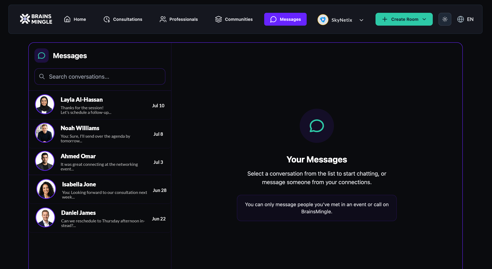

Send direct messages
Message people you have met in an event or call on BrainsMingle. All your conversations are in one place — search, continue, or start a new chat from the Messages page.
Before you get started
- You can only message people you have met in an event or call on BrainsMingle. You cannot message someone you have not interacted with on the platform.
Open your messages
- Click Messages in the top navigation bar.
- Your conversation list appears on the left. Each conversation shows the contact name, a preview of the last message, and the date.
- To find a specific conversation, type a name in the Search conversations... field at the top of the list.
- Click a conversation to open it and continue chatting.
